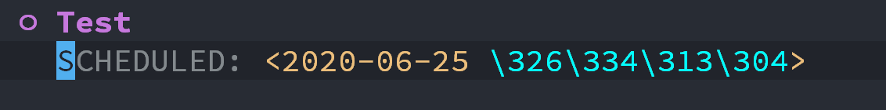

JNI中的引用
前言
平时写 Java 代码对创建的对象，我们很少会去关心怎么手动释放内存，大多数时候都有 GC 去帮我们回收。
然而在 JNI 中，几乎都是 C/C++ 的代码，它们是没有 GC 的，所以对内存的使用就需要格外小心了。
因此在 JNI 中提供了三种引用类型，分别是局部引用、全局引用、弱全局引用。下面介绍这三种引用。
Zygote 是怎么使用 LocalSocket 进行进程间通信的
前言
本文基于 Android10 ，分析 Zygote 与 AMS 是如何使用 LocalSocket 建立连接的。
Zygote
前言
Zygote 是 Android 中所有 App 的父进程，有着举足轻重的地位。了解了 Zygote 可以让你对系统如何工作有更深入的了解，今天来学习一下 Zygote 的知识。
本文基于 Android10
Handler 之 MessageQueue
前言
上一篇文章，我们从 Java 层探索了消息机制的原理，以及在使用中会碰到的问题，这一篇从 MessageQueue 入手，带你了解 Native 层的原理。
本文源码基于 Android10
Handler
前言
Handler 在 Android 中的地位不用多说了，没有消息机制则寸步难行。
通常我们会使用 Handler 在主线程与子线程之间通信，那么它们是怎么通信的，有什么玄机？
本文会带你从 Java 层的源码了解其原理，以及在使用过程中要注意的地方。下一篇则从 Native 层了解背后的原理。
Android中管道的使用
前言
最近读了一些 Android 源码，发现其中不少是用 pipe 机制来实现的，并且和我们往常使用 pipe 有些不一样。
有必要学习一下 pipe 的使用，不然会影响阅读源码，并且 Android 里的使用方式比较有技巧。
C++5大构造函数
前言
自 C++11 以来，引入了移动构造函数和移动赋值函数，使得在构造对象的时候可以减少调用次数，以提高性能。
所以 C++的构造函数从 3 个变成了 5 个，分别是构造函数、拷贝构造函数、拷贝赋值函数、移动构造函数、移动赋值函数。
它们非常相似，放在一起容易搞混，于是总结一下，便有了此文，希望能够对大家有所帮助。
把Manjaro安装到Macbook Pro的外置硬盘
前言
在开始行动之前，请使用Time Machine备份系统，以免出现数据丢失，导致不可挽回的局面。
随着电脑的使用，软件越装越多，感觉越来越卡，在Mac上也不能例外。于是我就萌生来在Mac上装Linux的想法，毕竟Mac的配置跑Linux完全没有问题。
OpenGL环境搭建
前言
本文在 Manjaro Linux 下进行操作，学习如何在 Linux 下结合 CMake 搭建 OpenGL 环境。
CMake基础
前言
自从 AndroidStudio2.2 开始支持 CMAKE 来构建 C/C++ 程序之后，作为 Android 开发就可以使用 CMake 来替换 Android.mk 了。
基本使用
在学习 CMAKE 之前，我们先来看一下如何使用 CMAKE 编译项目。假设 CMakeLists.txt 已经编写完毕，并且是正确的。
使用ccls作为C/C++的补全方案
前言
最近使用 C/C++ 开发，在 Emacs 下使用 Cmake 作为编译工具，结合 ccls 进行代码补全，有着不错的体验，于是记录一下。
ROS文件系统
前言
在上一篇文章中，我们谈到了怎么在 Arch 系的 Linux 上安装 ROS ，这只是入门的第一步，接下来我们要来了解 ROS 的文件系统。
在Arch上安装ROS
前言
上周开始，我在 Arch 上安装 ROS ，装了一周才搞定，记录一下碰到的问题。
官方推荐使用 Ubuntu 来安装 ROS ，但是我比较喜欢 Arch 所以就尝试在 Arch 上安装， Arch 上安装 ROS 的资料还是比较少的，官网的教程并不是那么准确，有误导性，所以写下此文，希望能帮助有缘人。
Windows 下的 Git 自带 GPG
Windows 下 Org-Mode 星期不显示
现象
这些日子切换到 Windows 下使用 Emacs ，在使用 Org-Mode 设置计划时间后，星期几显示不出来，如下所示

解决办法
|
|
参考
Rust 环境搭建
简介
早就听说 Rust 的大名， 近两年 Rust 发展的不错，从微软宣布要使用 Rust 来替代 C/C++ 重写 Windows 组件，到 Rust 进入 TIOBE 排名前20，越来越受到开发的关注。
Rust 的官网介绍其是一门赋予每个人构建可靠且高效软件能力的语言。它的特点是：运行快，防止段错误，保证线程安全。
Parallels Desktop 安装 Manjaro 无法进入安装界面的解决办法
前言
自从使用 Manjaro 19 开始，在 Parallels Desktop 中安装 Manjaro 发行版的时候，要不就卡在启动页面进不去安装页面，要不就是在安装 Parallels Tools 后卡在启动页面，折腾了许久，翻遍了各个论坛和帖子都没有找到解决方案，于是我有两种选择，一种是使用其他发行版(对我试了其他发行版)，另一种是用其它虚拟机软件(Virtual Box)。
Gradle入门
前言
在前一篇文章我们讲了 Groovy ，有了 Groovy 的基础就能看懂 Gradle 里的语法。但是光有 Groovy 基础还是不够的， Gradle 提供了一些 API 让我们可以很方便的参与到项目的构建中。
Groovy 入门
前言
在 Android 中现在默认的构建工具是 Gradle ，而 Gradle 构建工具是使用 Groovy 语言编写的，这就使得了解 Groovy 语言变得非常重要了。
如果你不了解 Groovy 会以为 build.gralde 文件中写的就只是一些配置，其实并没有这么简单。之所以看起来项配置文件，是因为 Groovy 的闭包特性，让我们写起来简单，看起来像配置文件，这就降低了编写的门槛。使得我们可以专注于 Android 层面的业务逻辑。
随着 Android 的发展，我们不能局限于应用层，在构建的过程我们也可以进行一些优化。今天就来学习一下 Groovy 这们语言。